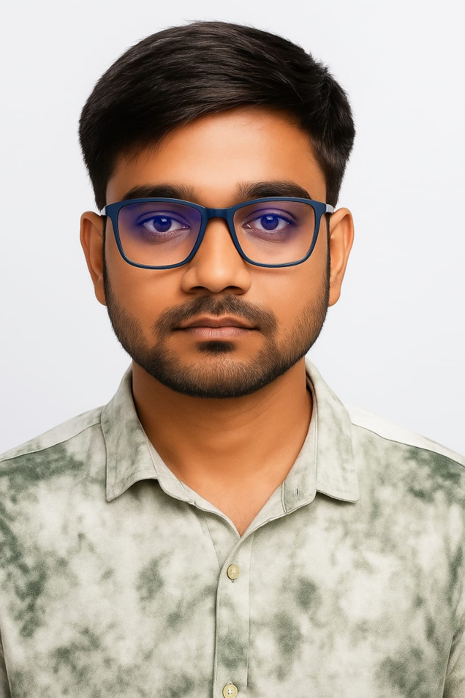

|  |
Hi, I’m Sujoy Saha, an aspiring full stack web developer from Karaigachhi, West Bengal. I'm currently on a dedicated journey to learn web development, focusing on both frontend and backend technologies. I started this path with a deep interest in how the web works and a strong desire to build useful, beautiful websites that make a difference. I’m currently learning through Angela Yu’s Full Stack Web Development Bootcamp, where I’m gaining practical knowledge in HTML, CSS, JavaScript, Node.js, Express, MongoDB, and more. Every day, I dedicate 4–5 hours to learning and building — I believe consistency beats talent when talent doesn't practice. I enjoy working on real-world projects that allow me to apply my knowledge and grow. Whether it’s crafting responsive layouts, designing clean user interfaces, or exploring backend logic, I’m always excited to solve problems with code. Beyond tech, I’m a curious learner who values discipline, creativity, and growth. My goal is to become a professional developer and contribute to impactful web applications, while continuously improving my skills. Let’s connect and create something meaningful together. |
Feb 2023 - Sep 2023
I'm a passionate learner and aspiring web developer currently learning full stack development. I enjoy building websites and improving my skills every day.
I’m currently focused on learning HTML, CSS, and JavaScript through online courses and building small projects to practice.
I mainly use VS Code, GitHub, and tools like Figma for design inspiration. I'm also exploring tools like Bootstrap and basic JavaScript.
I’ve built basic websites like resumes, portfolios, and practice landing pages using HTML and CSS. More advanced projects are on the way as I learn.
You can reach me via email or through my social media links provided on the contact section of my website.
I am from Karaigachhi, a village in the Nadia district of West Bengal.
I moved to Delhi/Noida in search of better job opportunities, skill development, and to grow my career in the tech field.
Adjusting to a new city was tough at first — language, cost of living, and being away from home. But it also made me stronger and more focused on my goals.
Feel free to reach out to me for collaboration, work, or just to say hello!
Email: officialsujoys1@gmail.com
Phone: +91-9686041247